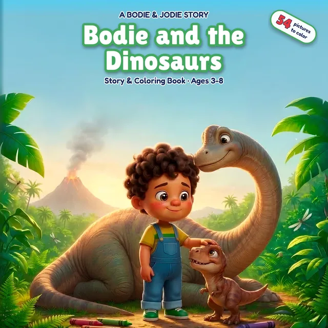
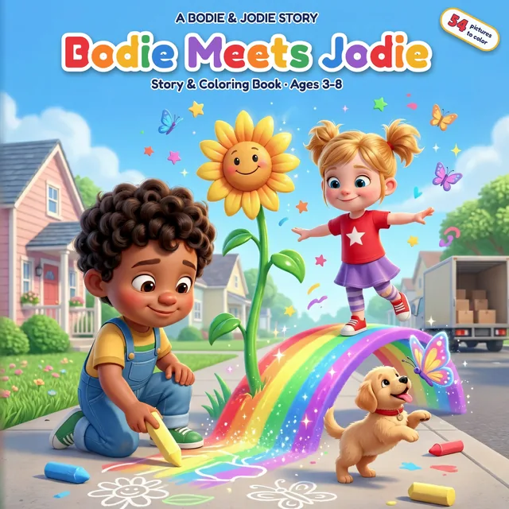

New on the shelf
The latest planners, coloring books, journals and puzzle mysteries from Madiland AI Books, newest first. Open any of them.
Keys, routes, owners, weather, payments. Open it on the first Monday of 2027 and write the walks in as they come.

A bath starts at 9:15, a full groom runs past lunch and a nail trim fits in at 2:45. Open it and book the first week of 2027.

The plan on the left, the truth on the right. Open it and live one market day, bell to bell.

One rainy day, one box of crayons, and one very small roar. Open the book, read a page, then pick a crayon and color the picture right here.
Stocks, options, futures, forex and crypto on one kind of card. Open it, fill in a trade, and tap the boxes that tell the truth.

One garden, one little bunny, and one very special Sparkle Egg. Open the book, read a page, then pick a crayon and color the picture right here.

The loss floor first, the trades after. Open it and fill in one morning on the micros.
Five more sleeps until Halloween, and nothing here is too scary. Open the book, read a page, then pick a crayon and color the picture right here.
Snow is falling, and Christmas is just six sleeps away. Open the book, read a page, then pick a crayon and color the picture right here.

A shy boy, a bold girl, and a golden puppy with a red ball. Open the book, read a page, then pick a crayon and color the picture right here.

Ten countries, ten sauces, ten suspects, one killer with impeccable taste. Open it, dim the lights and read the first chapter.
One trade, from the plan to the truth. Open it and fill in a EUR/USD card, slip by slip.
Hear about the next one
This page is kept in order, newest first. If you use a feed reader, follow the feed: it carries the title and one line about each new book and asks for nothing from you.